桐庐半马前24小时：安于日常，拥抱期待
一、晚点起床是不存在的
昨晚在准备行李和比赛用品的时候计划着今天早上要睡到 8 点多，在补补觉的同时也是给比赛蓄力。
这次准备的东西有：
- 三只能量胶+一袋盐丸
- 两双袜子
- 一双跑鞋：强风 Pro2.0
- 一件跑步背心
- 一件跑步短裤
- 护臂
计划的很好，不过家里的橘猫才不管你什么计划。听到猫叫的此起彼伏，声声入耳，不得不起来看看，打开卧室门发现猫果然在门口游走着。
戴上手表发现表盘上显示的时间为6点42，是和昨天娃上学的时候同一个时间起来的，不比之前早但真的一点也不晚。
借着这个空隙，在厨房里把早上要吃的烫面放在盆里面泡好，再给猫喂点猫粮，顺势把阳台门关起来，窗帘拉上。
虽然当时已经不那么困但依然决定再回卧室睡一个小时，把猫暂时关阳台是最稳妥的方式。又眯了一个多小时之后，把猫放出来接着开始做早饭。
中年人的一天也正式开启。
二、今天是跑还是跑呢
由于是第一个正式的 A1半马比赛，人数规模过万，多少有点紧张。
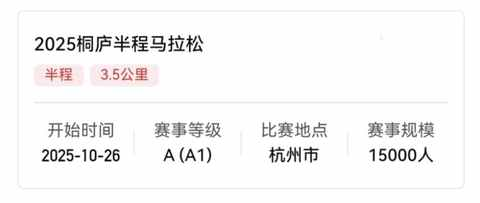
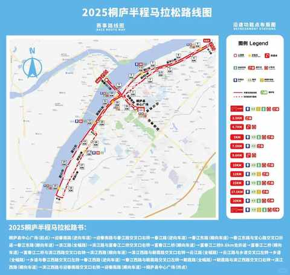
昨天从学校接到儿子之后，便直接带他去上羽毛球课，正好这个时间我至少能跑个 10-15km。
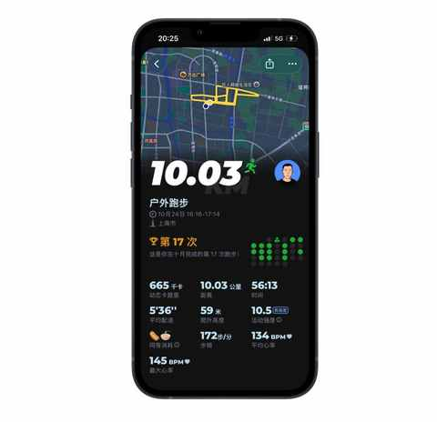
跑完后感觉状态一般，从这个时候就开始纠结第二天也就是今天还跑不跑。
上完课回去后又看了一些自媒体关于半马前一天怎么办的事情，有说慢跑+几组冲刺的，有说完全休息的，都挺有道理的。
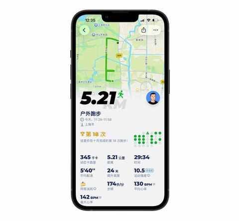
最终决定还是按自己的节奏来，按跑五休二的计划，今天是需要跑，最终来了一个 5km 慢跑。
穿的是慢跑鞋，状态其实很一般，但跑完之后的感受上比不跑好一些。
三、第二次自驾来桐庐
上次是 4 月份的时候，去了大奇山和心动乐园，出高速便是两句让人印象深刻的介绍：“中国快递之乡” 和 “中国最具幸福感县级城市”。
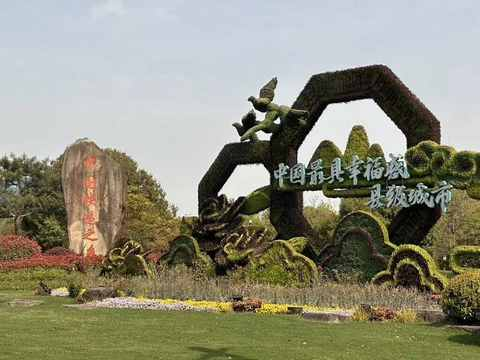
昨天晚上用高德地图预估了路线和时间，今天实际花的时间是类似的。
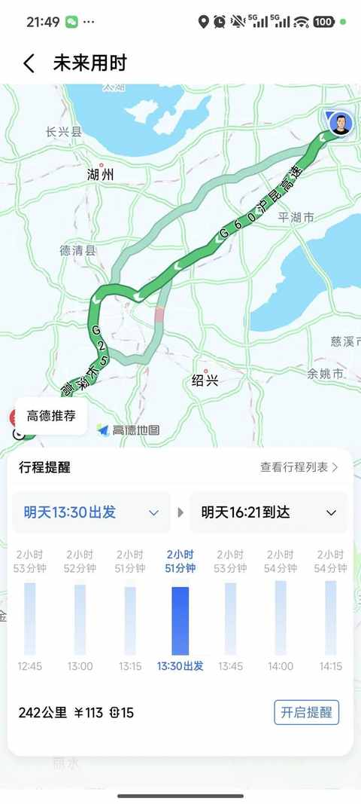
240 多公里，历时接近 3 个小时，路上的车还挺多车速勉强能位置在 90-100，很少的路段才能跑到 120。
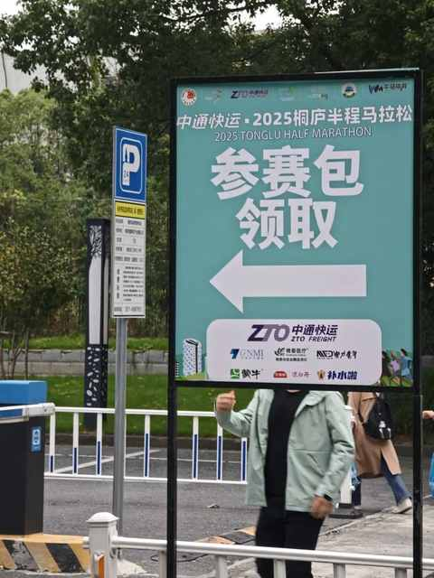
整个领物过程很顺利，志愿者很多，全程用了不到 10 分钟。
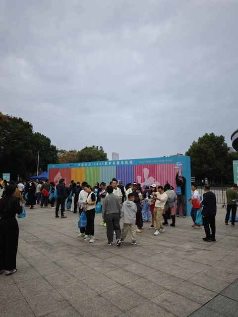
参赛包里面对我有用的是：
雨衣、一袋能量胶、一袋盐丸、一盒牛奶、参赛服、号码牌。
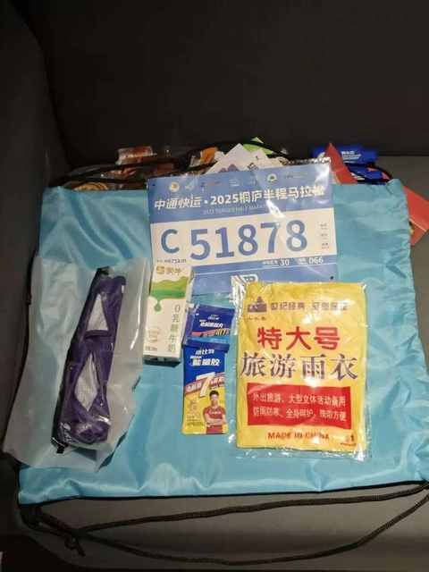
其余的是各式各样的零食，儿子在车上的时候就快把薯片吃完了，我在整理的时候发现了干脆面也果然给吃了。
其余的零食明天比赛完，在回去的路上估计也会被吃掉不少。
四、吃当地特色美食
虽然在领物的体育馆旁边也看到很多店，但最终和老婆决定还是先开车去宾馆再去到 4 月份吃过的那家店再吃一顿。
虽然评分都不到 4 分，但去的时候还是有点晚了，且不说等位花了半个多小时。
在位子上坐好又等了20 多分钟才上第一道菜，在等的过程中能看到不少明天半马的选手们，跑步鞋和领物包的辨识度过高。
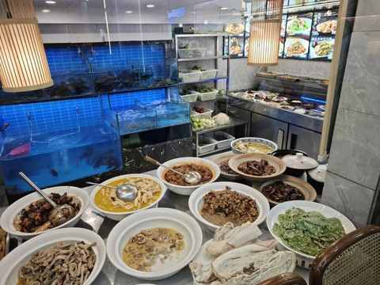
和其他店铺等位都是在店门口不同，这家店等位是在最里面的点菜间旁边，隔着玻璃能看到里面的各种菜，在等叫号的同时能仔细观察一面玻璃之隔的菜。
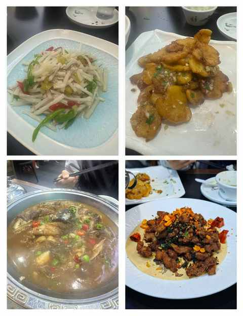
不敢说多好吃，但绝对足够特色足够下饭，以至于都没有想起来拍照。
吃一顿饭，实际在吃的时间花的是最短的，也是不虚此行了。
五、结语
在完成今天的文章发布之后，我也会在 10 点左右就睡觉，然后第二天 5点 10 分左右起床。
比赛确实要点比赛的样子，要有点紧张感，也要偶尔放松， 但绝不能在赛前掉链子
贴一张上周日半马测速的成果给自己打打气。
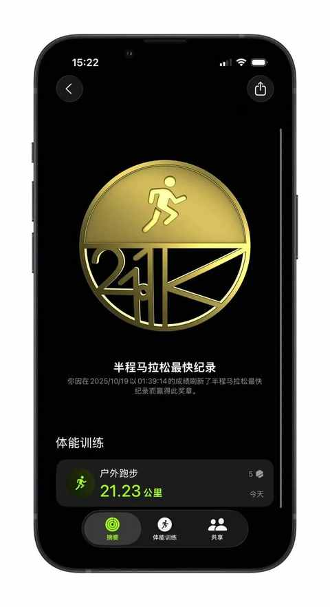
希望在明天的比赛中能再次达到或超过这个最快记录！